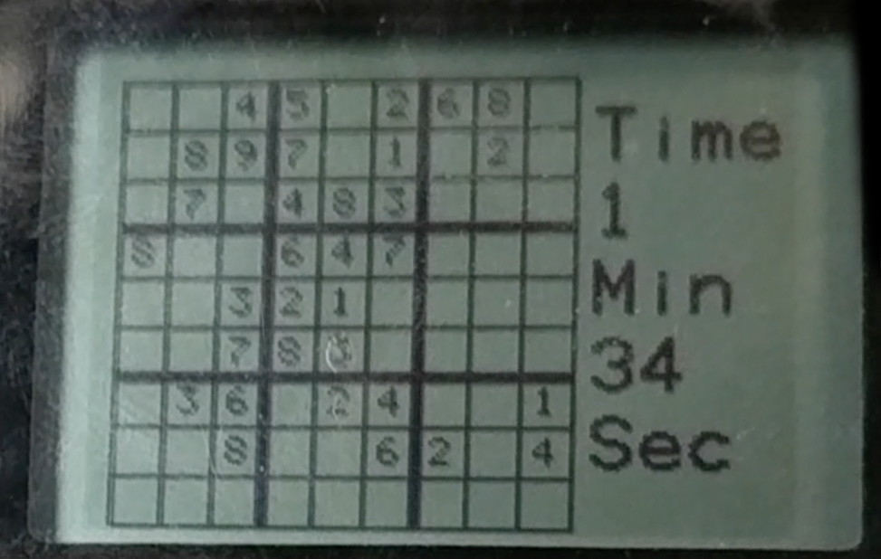
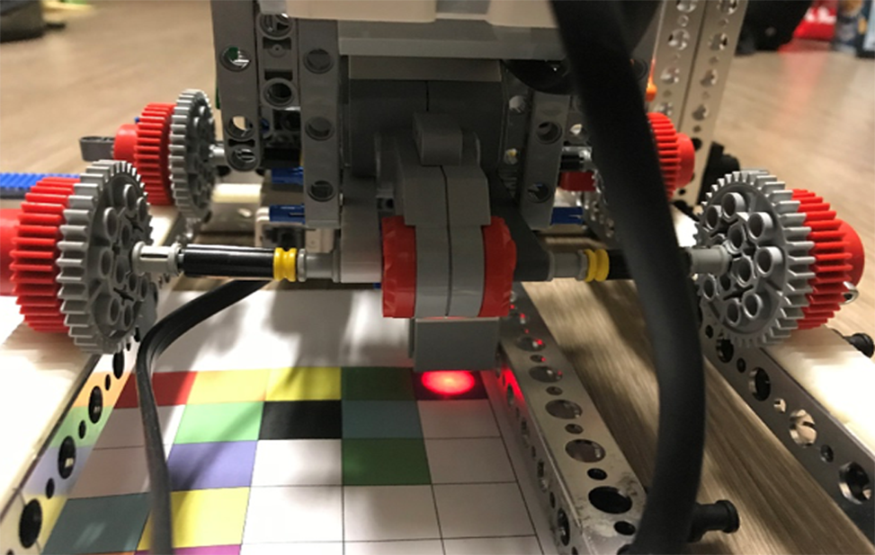

Jan. 2020 - Feb. 2020
This robot was used to align a target for a projectile that was launched from above it. The robot was programmed for interactive control using C on a Nucelo development board with an ARM microcontroller. The robot had two axes that utilized limit switches and interrupts to provide bounds checking (i.e. ensure that the motors did not fall off their racks). Controls for speed and direction were programmed to be provided by a potentiometer and terminal, respectively.
Oct. 2017 – Dec. 2017
As a project in my first year of Mechatronics Engineering, I collaborated in a team of four to design a robot capable of solving colour-coded Sudoku puzzles. The Sudoku grids were colour coded in order for them to be read using a colour sensor. The robot was programmed in C to traverse the grid and read in the different colours. Once the robot completed the grid traversal, it then calculated the solution (if possible), and displayed this solution on the screen.
 Nov. 2016 – Mar. 2017
The VEX Starstruck Competition is based around a 12' by 12' field with a fence in the middle of this field.
Two teams are situated across from each other on this field. The purpose of the competition is to
design a robot to throw the stars and cubes on the field onto the opposing team's side. At the end
of the match, the team that has thrown more stars and cubes onto their opponent's side wins. The competition
consists of an autonomous period, where the robot operate on its own, and then a controlled period,
where the robot must be controlled using a joystick controller.
I lead a team of 4 to build a robot to compete in the VEX Starstruck Robotics Competition. We created
our robot using VEX EDR parts, which was one of the requirements of the contest. We programmed our robot
in C for both the autonomous period and the controlled period of the competition.
Jul. 2019 – Aug. 2019
RTX Space Invaders was created based on the retro video game Space Invaders.
The game was designed for the NXP ARM LPC 1768 microcontroller in C using multiple threads
to manage the game's various properties such as score and position. Onboard peripherals were used to allow the user to
interface with the game. The peripherals used were a joystick to control the user's position, a push button to fire the user's weapon,
and LEDs to keep track of the user's score. To achieve the necessary concurrency on the single core ARM Cortex-M3 processor found
on the LPC 1768 board, CMSIS-RTOS2 was used for thread management.
View on GitHub
Jul. 2019 – Aug. 2019
This robot was created with two main functions: to follow a black line on a white surface and to detect magnets placed along the black line.
The line detection was done using two photodiodes and the magnet detection was done using a Hall effect sensor. The robot was programmed for
autonomous function using C and an 8-bit microcontroller.
The line-following functionality of the robot was done using two photodiodes placed on the left and right side of the robot.
These photodiodes measured the light reflected from the surface underneath. Based on difference in light reflected, the
robot would then turn left or right. The photodiodes were
used in short-circuit mode; based on the light intensity received by the photodiodes, current was generated. To generate a single-ended
signal from the output of the two photodiodes, a transresistance amplifier was first used for each photodiode to transduce the
generated current into voltage. Then, these two voltages were fed into a differential amplifier to generate a single-ended signal. This
signal was then used by the microcontroller to identify if the robot should turn left or right.
The magnet detection functionality of the robot was achieved using a Hall effect sensor with a non-inverting amplifier to amplify
and zero the voltage generated by the Hall effect sensor due to the surrounding magnetic field.